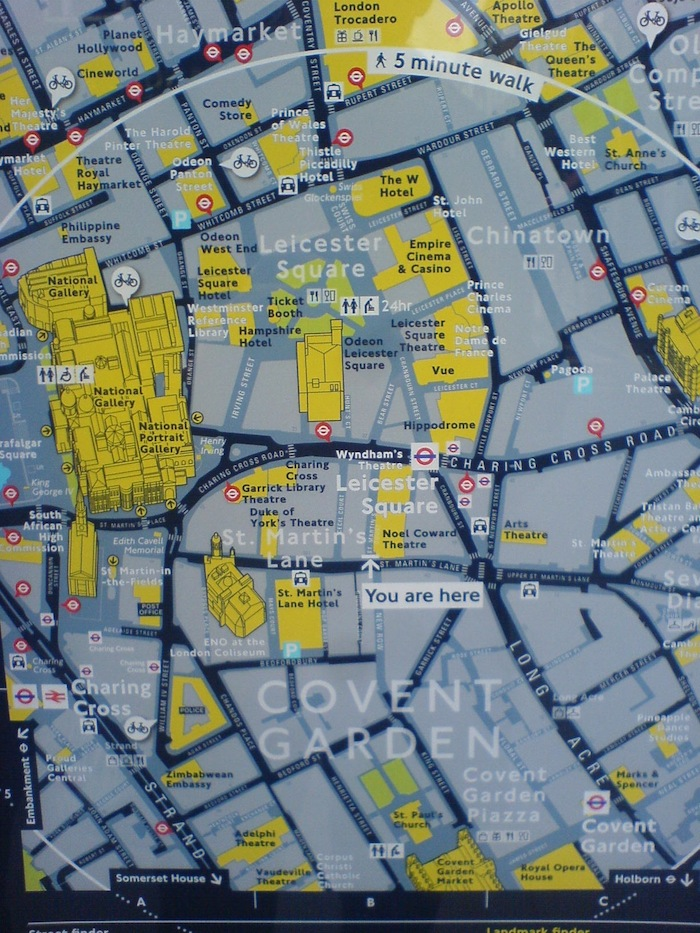

London, Mar 3, 2015. Image credit: RC.
There are two principal styles of mental representation of a navigation space: map and route. (Tversky) Route navigators prefer being fed a list of turns and waypoints; map navigators have a more holistic preference. Route navigation is now a common feature of GPS assisted navigation; when you drive, your device anticipates turns and suggests decisions in a narrative way, you just have to listen and act. The cognitive advantage of route mode is precisely that it mimicks your action, and delivers you from the burden of making inferences before and on top of making decisions. But its current success is completely technology driven. Absent a software that knows about your position and makes choices between different options, you should choose form a large set of route descriptions, one for each direction to any target from any point you currently are at: just reading the list will take you a massive amount of time. Maps were, of course, the display solution. Their are inferentially costlier than route descriptions, as you have to infer your route from an exam of the map, but at the same time they present all the solutions at a glance, and you can take visual shortcuts (e.g. the shortest path on the map) to reduce the number of inferences you should make.
When confronted with maps, those who are more confortable with route descriptions immediately try to use the map perspectivally, by orienting it target-up. This affords a visual selection of the present location to target direction, and the reasonable bet is that the route will mostly follow that direction. Reorientation creates the possibility for a visual shortcut (a displacement of cognitive load from a slow processing to a fast processing part of the brain).
Maps exposed in public spaces are not orientable. What can be done? The city of London decided to put in key locations as many oriented maps as needed. This means that if you go in one direction you will be given the possibility of using a map with a certain orientation, and that if you turn around and decide to go in the opposite direction, you can use a map of the same area that is turned upside down.
Here the cost is that once you turn around, it takes you time and energy to see that it is the same map upside down or rotated.
One more time, there is no free cognitive lunch.